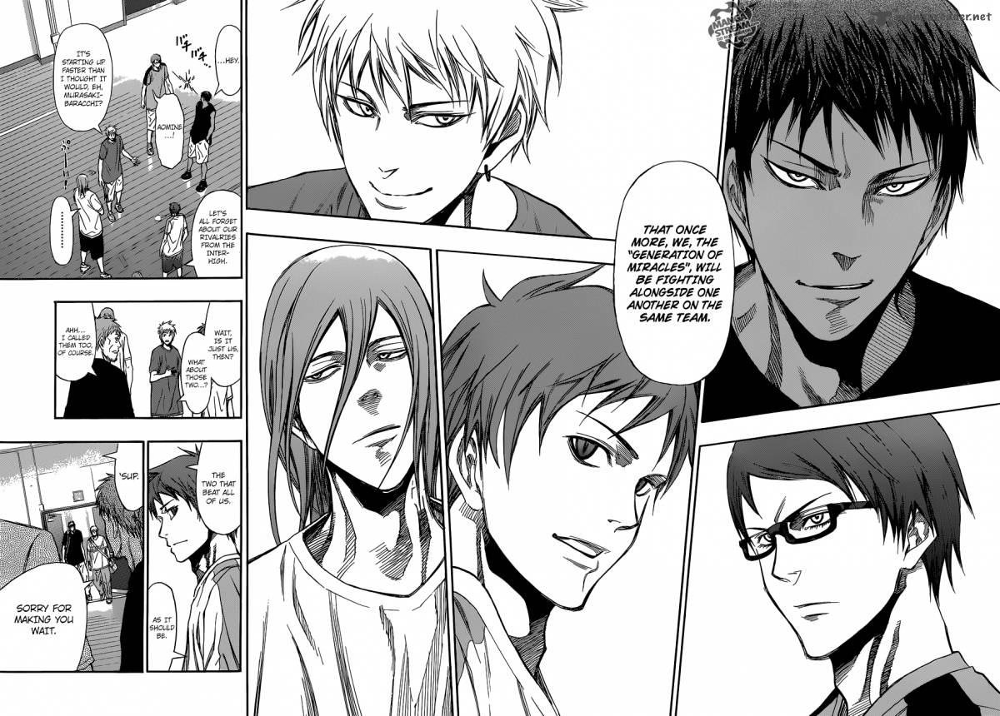

kuroko no basket Last Game
Other name:劇場版 黒子のバスケ LAST GAME; Kuroko no Basket Last Game
Genres: Movie, School, Shounen, Sports
Date aired:Mar 18, 2017
Status: Completed
Views:313,784
Summary:
Original story written by the mangaka of Kuroko no Basket Tadatoshi Fujimaki.
